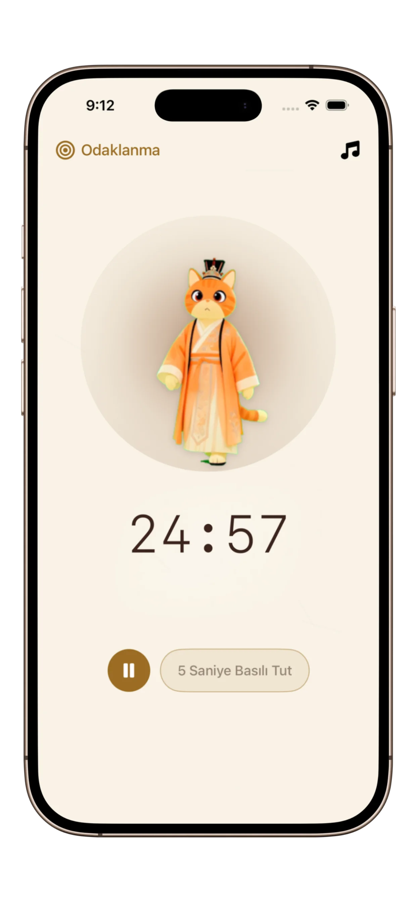
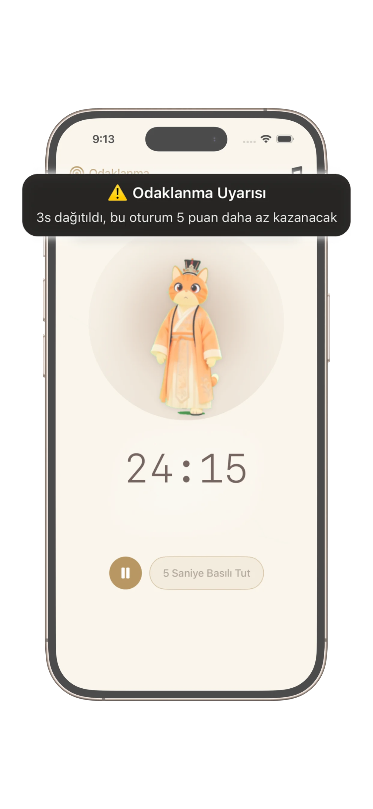
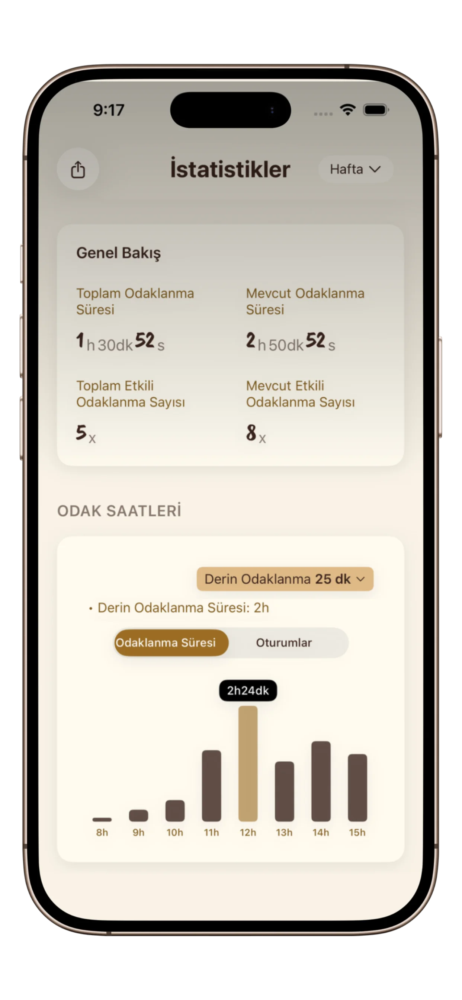

Derin Odak İçin Bir Alan
Kesintisiz odak için tasarlanmış temiz arayüz. Pomodoro veya serbest odak — minimal, sakin ve etkili.
Oturumları takip etmek, ödüller kazanmak ve odak alışkanlıklarını geliştirmek için en sevimli Pomodoro zamanlayıcı — sakin bir kedi arkadaşıyla.
Odak Yolculuğunuza Başlayın
PurrrrrFocus'un odak oluşturmanıza, ilerlemeyi takip etmenize ve motive kalmanıza nasıl yardımcı olduğunu görün.

Kesintisiz odak için tasarlanmış temiz arayüz. Pomodoro veya serbest odak — minimal, sakin ve etkili.

Elite Odak Modu, dikkat dağıtıcıları nazikçe caydırarak en önemli işinizi korumanıza yardımcı olur.

Seriler, toplam saatler ve büyüme — günlük odağı ölçülebilir iyileşmeye dönüştürün.

Yanınızda sakin bir varlıkla alışkanlıklar oluşturun. Baskı olmadan, sürekli teşvik.

Netlik ve sessiz odaklamayı desteklemek için tasarlanmış minimal, doğu ilhamlı temalar.
Pomodoro zamanlayıcı, işi kısa molalarla yapılandırılmış oturumlara bölerek odaklanmanıza yardımcı olur. Bu yöntem verimliliği artırır, zihinsel yorgunluğu azaltır ve derin işe başlamayı ve sürdürmeyi kolaylaştırır.
PurrrrrFocus, öğrenciler, içerik üreticileri ve dikkat dağınıklığı yaşayan herkes için tasarlanmıştır. Sade arayüz, esnek zamanlama modları ve nazik görsel geri bildirimle derin odak, alışkanlık oluşturma ve DEHB dostu iş akışlarını destekler.
Karmaşık üretkenlik uygulamalarının aksine PurrrrrFocus sade tutar. Dağınıklık yok, baskı yok—sadece odaklanmak için temiz bir alan, isteğe bağlı temalar ve yumuşak bir arkadaş varlığı.
Kullanıcılarımızdan PurrrrrFocus deneyimi hakkında gerçek geri bildirimler.
"PurrrrrFocus kesinlikle harika! Hem çocuklar hem de benim için mükemmel—sevimli ve pratik, her gün biraz ilerleme kaydetmemize yardımcı oluyor. Odaklamayı geliştirmek için harika ve kendimin daha iyi bir versiyonu olmak için uzun vadede kullanmaya devam edeceğim."
"Çok sevimli! Kedi arkadaşlarıyla duygusal bağlantıyı seviyorum!"
"Aman Tanrım bu çok sevimli! Çin ilhamlı temaları seviyorum."
Önceki SaaS kariyerimde, 100'den fazla grup sohbeti ve amansız yapay zeka botlarının bitmek bilmeyen döngüsüne hapsolmuştum. Derinlemesine düşünme yeteneğimin her geçen gün azaldığını hissettim. Purrrrrfocus, zihnimi dijital gürültüden geri alma mücadelemden doğdu.
PurrrrrFocus, odaklanmanıza yardımcı olan, dikkat dağınıklığını azaltan ve tutarlı çalışma alışkanlıkları oluşturan minimalist bir Pomodoro zamanlayıcıdır.
Evet. PurrrrrFocus sadelik ve sakinlik düşünülerek tasarlanmıştır; DEHB kullanıcıları için bunaltıyı azaltmaya ve yapılandırılmış odak oturumlarını desteklemeye yardımcı olur.
Kesinlikle. Öğrenme, derin iş ve günlük verimlilik rutinleri için uygundur.
Evet. Odak oturumlarınızı görüntüleyebilir, süreyi takip edebilir ve zamanla tutarlı alışkanlıklar oluşturabilirsiniz.
Uygulama temel özellikleri ücretsiz sunar; gelişmiş kullanım için isteğe bağlı premium özellikler mevcuttur.
PurrrrrFocus'u indirin ve disiplininizi güçlendirin, her seferde bir oturum.
Sakin, üretken odak arayan kullanıcılar tarafından seviliyor!
Dünya çapında kullanıcılar tarafından güveniliyor. Odak yolculuğunuza şimdi başlayın!